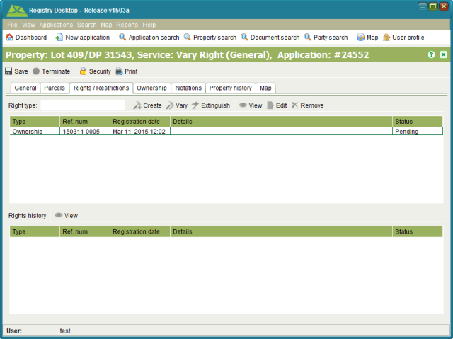

Record Ownership
Ownership details are linked to the primary right for the property and each property should
only have one active primary right. The primary rights supported by Registry are Apartment,
Ownership, and State Ownership. These rights represent the estate type for the property.
To create a primary right and record ownership details on a new property you can use the New
Freehold Title or Convert to Digital Title services.
There may also be situations where the property information migrated into Registry does not
include ownership details. In this case you can add ownership details to an existing property
using the Registration on Title or New Apartment Title services.
Steps
-
-
 Start a service that supports creating
a new primary right on the property. The Property Details screen will open.
Start a service that supports creating
a new primary right on the property. The Property Details screen will open.
-
On the Rights / Restrictions tab, the select the type of primary right to create (one
of Ownership, Apartment Ownership or State Ownership) and click the
 Create tool to create a pending primary right and open the
Ownership screen.
Create tool to create a pending primary right and open the
Ownership screen.
-
Update the Notation text and add references to documents that confirm the ownership
details.
-
Ownership rights consist of one or more shares which are expressed as fractions.
The fractions from all current shares on the property must sum to 1. To enter a new
share for the property, click
 Add in the
Shares section.
Add in the
Shares section.
-
A share may be allocated to one or more parties. A party can be an individual or an
entity. Shares that are allocated to more than one individual or more than one entity
are considered undivided (a.k.a. joint tenants). This means Registry does not record
the exact share for each party simply that multiple parties participate in the same
share.
-
To add parties to the share, clickAdd.
This will open the Party Details screen allowing you to enter in details for an
individual or an entity. Once the necessary party details have been entered, click
 Save & Close.
Save & Close.
-
Once all parties have been added to the share, clickSave & Close on the Share Details screen and once all
shares have been added to the primary right, click Save and Close on the Ownership screen. The Property
Details screen will then show a new pending Ownership right.

Pending Ownership Right
-
-
If you need to make further changes to the ownership information, select the pending
primary right in the Rights / Restrictions tab and click the
 Edit tool.
Edit tool.
-
If you need to remove the pending ownership details completely, use the
 Remove tool on the Rights / Restrictions tab.
Remove tool on the Rights / Restrictions tab.
-
Save changes to Property Details and
continue processing the service and application as required.
Also See
-
-
Overview
-
Registry Desktop Screens